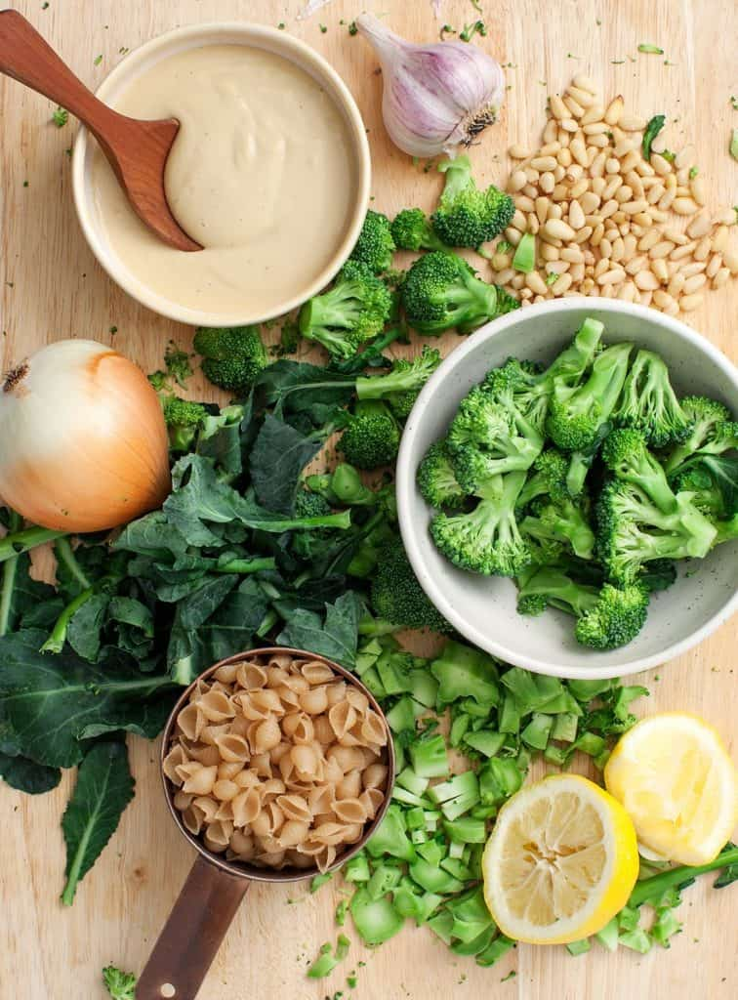

Creamy Vegan Pasta
131 calories

This creamy vegan pasta is my favorite recipe to make when I’m craving comfort food but don’t have hours to
spend in the kitchen. From start to finish, it takes just over 20 minutes to make, so it’s the perfect
weeknight meal. All you need to do is boil the pasta, blend up the sauce, sauté onion and broccoli, and toss
it all together. Then, you can sit down to devour warm bowls of noodles and veggies coated with this super
creamy vegan pasta sauce. While this sauce looks like a rich cream or cheese sauce, it’s actually a tangy,
luscious blend of white beans, lemon juice, and nutritional yeast. So this recipe is not only quick &
comforting, but it’s also healthy!
Vegan Pasta Recipe Ingredients
Of course, this creamy vegan pasta sauce is totally dairy-free, but it’s also different than many vegan
pasta sauces I make. Often, I turn to raw cashews or coconut milk in these recipes, but this time, I went in
a different direction. Here’s what I used:
- White beans are the secret ingredient that make this sauce thick, smooth, and creamy! They also
add a good amount of plant-based protein. Use canned beans, or cook your own.
- Lemon juice – brightens it up.
- Olive oil – adds richness..
- Nutritional yeast – fills this vegan pasta with yummy cheese-like flavor.
- Onion powder & garlic - amp up the savory, umami flavors in this recipe.
- Vegetable broth – (and pasta cooking water, if you like) loosens the sauce as needed.
- Pasta – I used small shell pasta, but use what you have on hand. Orecchiette, bow ties, or
rigatoni would all be great. Read the label on your pasta to make sure it’s vegan – most dried pastas
are..
-
- And pine nuts – add a delicious crunch!
Easy Vegan Pasta Recipe Variations
This vegan pasta is a great recipe to play with! The creamy, luscious vegan pasta sauce is a fantastic starting point for different combinations of vegetables, noodles, seasonings, and more. Here are a few ideas for changing it up:
- Switch the vegetables. Sautéed broccoli and onion are my go-to veggies here, but roasted broccoli, roasted cauliflower or Brussels sprouts would also be delicious. In the summer, stir in roasted tomatoes. In the spring, add market-fresh asparagus.
- Skip the actual pasta. Instead of regular pasta, serve this sauce over spaghetti squash or zucchini noodles.
- Spice it up. I love adding a few pinches of red pepper flakes to my bowl. Pickled jalapeños would be another fun, punchy addition.
- Get creative with flavor add-ins Amp up this creamy vegan pasta with chopped sun-dried tomatoes, dollops of vegan pesto, or fresh basil leaves.